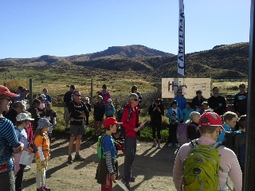

4th May 2014
http://facebook.com/NZRogaining
| New Zealand Rogaining Association (Inc.) 4th May 2014 |
http://facebook.com/NZRogaining |
• Upcoming Events (including School Rogaines and Championships)
• Events just past
1. Navquest Series, 25th May to 22nd June - Rotorua, Taupo, Wellington and Auckland
Four 3hr rogaines aimed at secondary school students, their families and teachers. Members of the public are more than welcome to join in by entering in the open category. Go to http://www.opc.org.nz/navquest/ for more information and to register a team online. The NavQuest is organised as a partnership between the Sir Edmund Hillary Outdoor Pursuits Centre of New Zealand (OPC) and orienteering clubs in Rotorua, Taupo, Wellington and Auckland
2. Canterbury Secondary Schools Rogaine, Christchurch Port Hills, Sunday 6th July
The Peninsula and Plains Orienteers are organising a Canterbury Secondary School Rogaine on Sunday 6th July based at Victoria Park. Planner is Tim Farrant. There will be a three and four hour options following the same format as the NZ Secondary Schools Rogaine in Rotorua on 9th August. The event will be open to anyone, and be a fund raiser to assist the top senior and junior teams to attend the National championships. Contact is Martin Etherington, martin@etherington.co.nz or ph. 027 433 1388
1. the NZRA website event calendar at http://www.rogaine.org.nz/ andfor details of future rogaines.
2. the Maptalk website, http://www.maptalk.co.nz/events/default.cfm?t=Rogaine

option in glorious Central Otago weather. Organiser Ed Stevens comments: